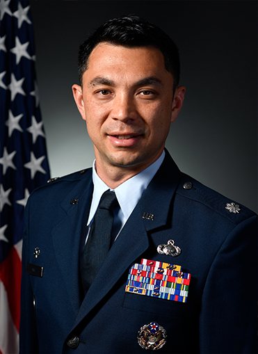
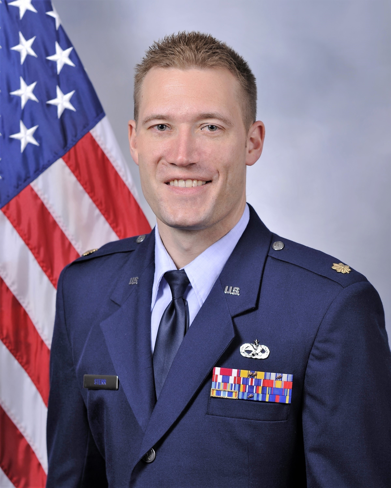
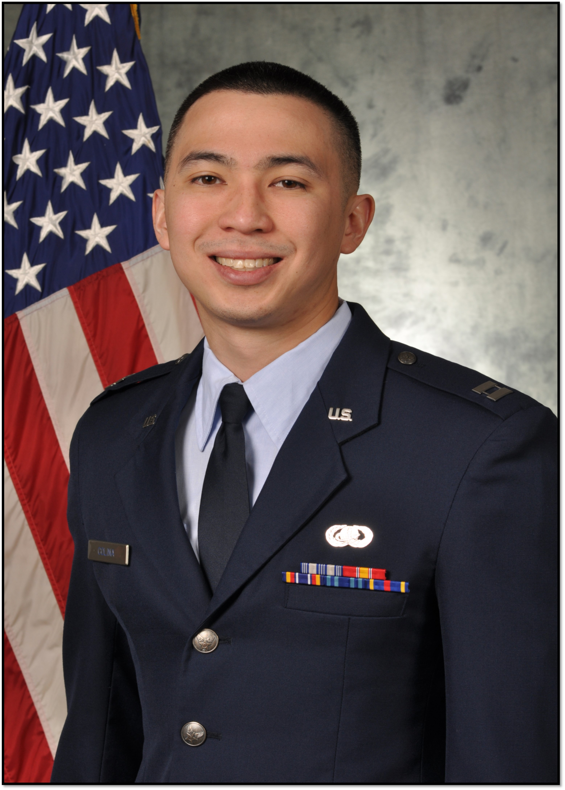
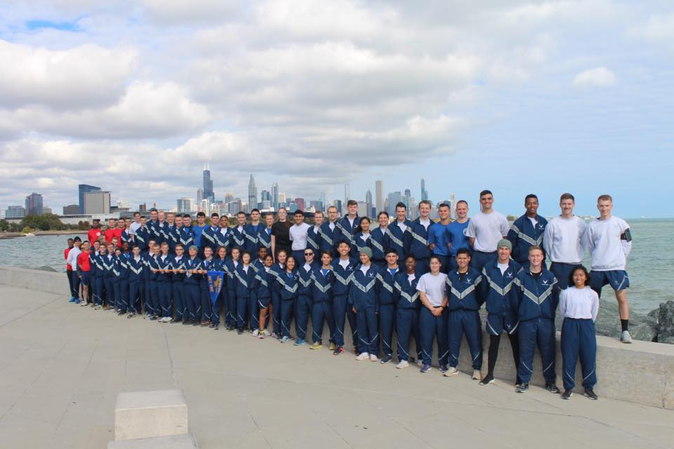

Det 195 Mission
"Develop effective leaders motivated to serve in the United States Air Force."
Detachment 195 Cadre:
Commander
Lieutenant Colonel Michael Aul is the Commander of Detachment 195, Chair of the Department of Aerospace Studies, and Professor of Aerospace Studies at Illinois Institute of Technology, Chicago IL. He is responsible for recruiting, training, and commissioning all AFROTC cadets at IIT and cadets from 13 other "cross-town" universities in the greater Chicago area.
Director of Operations
Major Jason Sterr is the Director of Operations at Detachment 195, Illinois Institute of Technology, Chicago IL. He is responsible for all aspects of Leadership Laboratory Activities and training.
Recruiting Officer
Captain Ronaldo Colina is the Recuriting Officer and Assistant Professor of Aerospace Studies at Detachment 195, Illinois Institute of Technology, Chicago IL. He is responsible for directing local and on-campus recruiting activities in-college, high school, and enlisted members in the local area.
